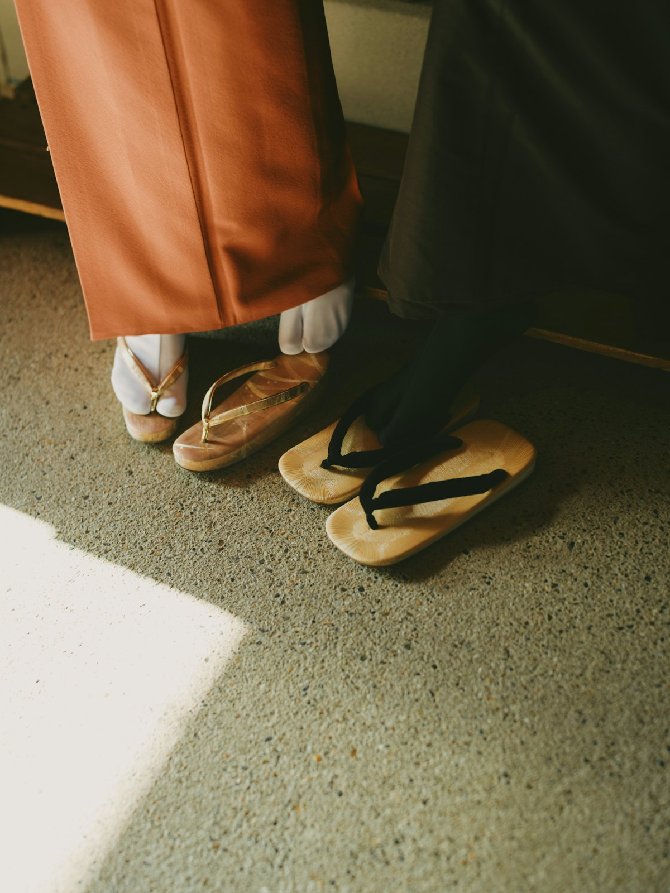
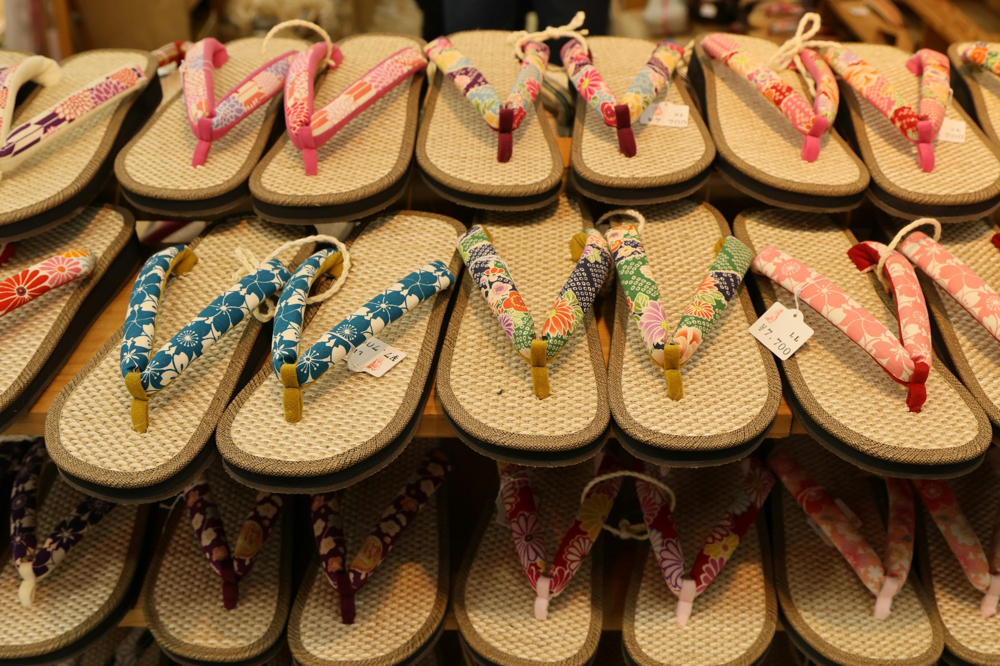
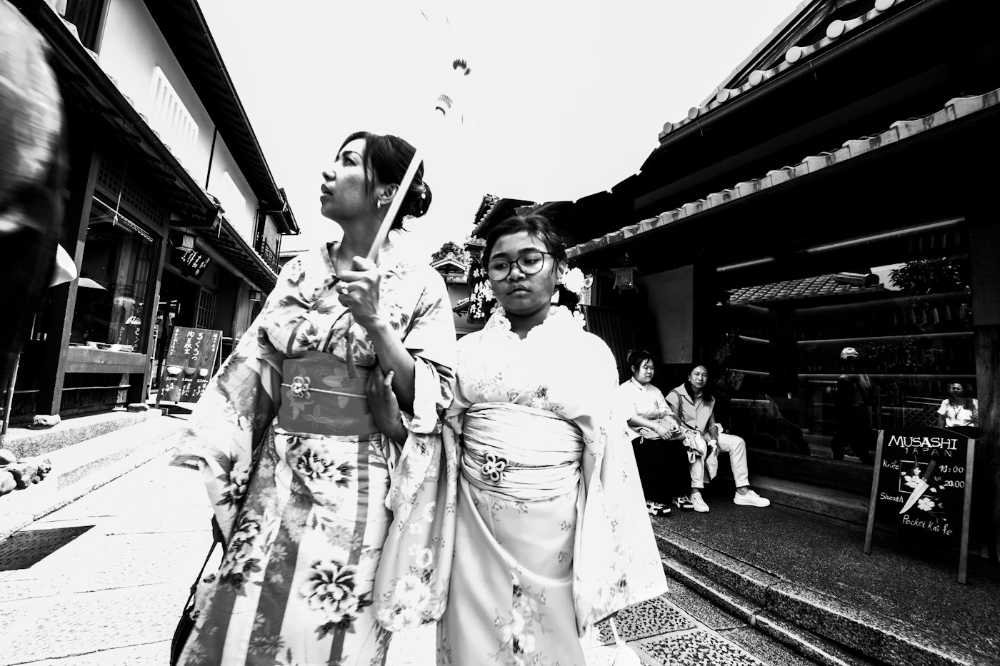

履物のオーダー
台と花緒を選び、足に合わせて挿げます。カレンブロッソに助六オリジナル花緒を挿げたものは32,000円（税込）から。

履物・袋物・傘 明治43年創業
与謝野晶子や菊池寛も通った、神楽坂の履物店。台と花緒を選んで、あなたの足に合わせて挿げます。
助六では、お好きな台と花緒を選び、足に合わせて挿げます。ここで組み合わせを試せます。
カレンブロッソに助六オリジナル花緒を挿げて、32,000円（税込）から。組み合わせはイメージです。
神楽坂が最も神楽坂らしかった明治・大正・昭和初期。与謝野晶子と鉄幹、菊池寛、西条八十、宮城道雄、川合玉堂らが店を訪れました。
今も助六オリジナルの花緒や袋物、和洋傘をそろえ、テレビや新聞、海外のメディアでも紹介されています。

台と花緒を選び、足に合わせて挿げます。カレンブロッソに助六オリジナル花緒を挿げたものは32,000円（税込）から。

着物にも洋服にも合う、助六オリジナルの袋物や和洋傘。
…
| 平日 | 10:30〜19:00 |
|---|---|
| 土・日・祝 | 11:00〜18:00 |
| 定休日 | 第2・第3日曜日 |
商品のご質問やご購入は、お電話かメールでどうぞ。